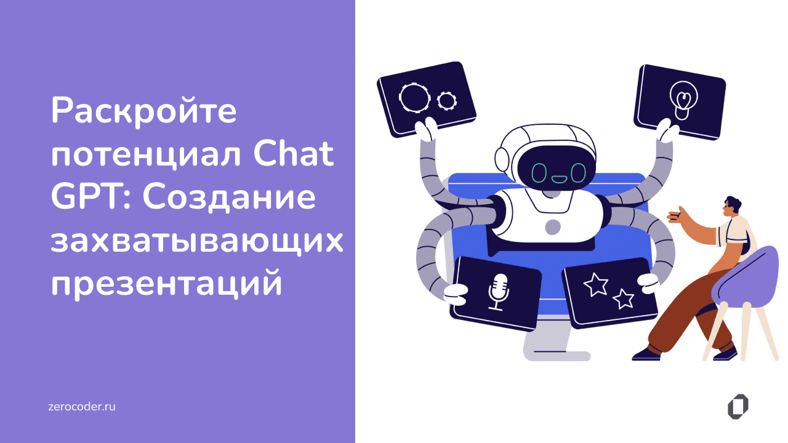

|

ChatGPT
В последнее время нам почти каждый день рассказывают в новостях, какие
очередные вершины покорили языковые нейросетки, и почему они уже через
месяц совершенно точно оставят лично вас без работы. При этом мало кто
понимает — а как вообще нейросети вроде ChatGPT работают внутри? Так вот,
устраивайтесь поудобнее: в этой статье мы наконец объясним всё так, чтобы
понял даже шестилетний гуманитарий!
Нейросеть Chat GPT — это большая языковая модель, обученная OpenAI, которая
использует глубокое обучение для генерации текста и ответов на вопросы.
Эта модель была создана на основе технологии трансформеров, которая позволяет
модели обрабатывать большие объемы текста и понимать связи между словами и предложениями.
Основная цель Chat GPT в России — это
предоставление пользователю качественных
и точных ответов на заданные вопросы. Для
этого модель использует огромный объем
текстовых данных, который был подвергнут
тщательной предварительной обработке.
Это позволяет модели учитывать контекст вопроса
и генерировать ответы, которыемаксимально соответствуют
запросу пользователя. Чат-бот GPT на русском может использоваться
для решения различных задач, таких как поиск информации, ответы
на вопросы, генерация текста и многое другое.
Эта модель может быть использована как на больших,
так и на малых масштабах, и может
быть адаптирована к различным типам приложений. Чат-бот GPT онлайн на русском обеспечивает
множество преимуществ для пользователей и разработчиков.
Среди главных достоинств можно отметить:
Высокая точность ответов на вопросы. Благодаря использованию глубокого обучения Chat GPT
может генерировать ответы, которые точно соответствуют запросу пользователя.
Быстрота и эффективность работы. Chat GPT может быстро обрабатывать большие объемы данных
и генерировать ответы в режиме реального времени.
Автоматическое обучение. Chat GPT может автоматически обучаться на основе новых данных,
что позволяет модели постоянно улучшаться и адаптироваться к новым условиям.
Chat GPT на русском в России онлайн, представляет собой инновационную технологию, которая
может быть использована в различных приложениях для улучшения пользовательского опыта и
повышения эффективности работы.Благодаря использованию глубокого обучения и технологии
трансформеров, Chat GPT может генерировать точные и качественные ответы на вопросы и является
важным инструментом для автоматизации различных задач.
|